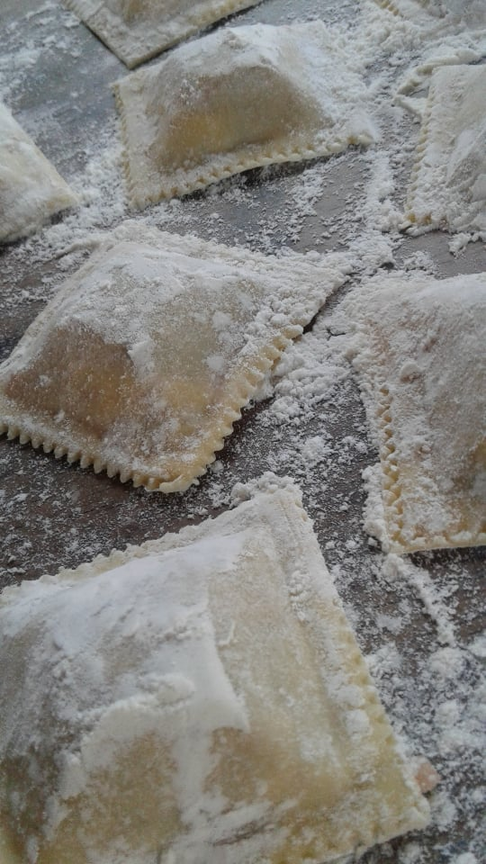

Hacé tu pedido online!
Hacemos pastas caseras congeladas en variedad de sabores, cuidando la materia prima para que disfrutes de la mejor calidad en tu mesa
| Sabores | Precio | Disponibilidad |
| Verdura y pollo | $500 | Ok |
| Calabaza, muzzarella y salvia | $600 | Ok |
| Berenjena y tomate | $350 | Ok |
| Jamón y queso | $600 | Ok |
- Verdura y pollo
- Calabaza, muzzarella y salvia

- Berenjena y tomate
- Jamón y queso
